- Object ID: 00000018WIA30DA20A0GYZ
- Topic ID: id_2039880 Version: 1.21
- Date: Sep 11, 2025 5:49:12 AM
B0 B1 Map Troubleshooting Guide
When you find shadings in the image, please follow the procedure below and setup B0 map and B1 map protocols.
About this task
Note B0 map and B1 map protocols can be used on patients.
Loading B0 map for software version earlier than MR30
Procedure
- Reproduce the bad scan. Keep the same scan parameters as the clinical scan. Parameters includes protocols, scan settings, coils, patient position, localizer position and so on.
- Make a new scan by clicking Duplicate & Setup button.
Figure 1. Duplicate & Setup button 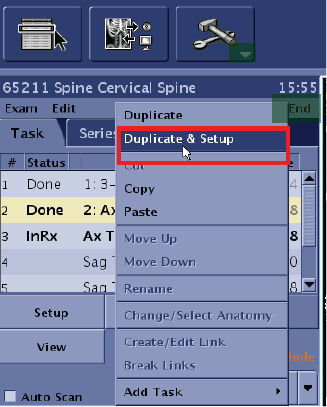
- Follow 3.1 - 3.4 to set 21 items of copied protocol as values listed in Values to be set.
Table 1. Values to be set Setting Parameter Value Position Attention 1 Plane Same as Clinical scan Imaging Options -> More 2 Mode 2D Imaging Options -> More 3 Family Gradient Echo Imaging Options -> More 4 Pulse GRE Imaging Options -> More 5 PSD Name B0rf Imaging Options -> More Need click Enter after typing in. 6 TR Same as Clinical scan Exam Page 7 Coil Same as Clinical scan Exam Page 8 FOV Same as Clinical scan Exam Page 9 Phase FOV Same as Clinical scan Exam Page 10 Slice Thickness Same as Clinical scan Exam Page 11 Spacing Same as Clinical scan Exam Page 12 Freq.Dir Same as Clinical scan Exam Page 13 Loc Before Pause 0 Exam Page If have. 14 TE Min Full Exam Page 15 FA 20 Exam Page 16 Frequency 128 Exam Page 17 Phase 128 Exam Page 18 NEX 1 Exam Page 19 Bandwidth 31.25 Exam Page 20 Scan Modes 0: If scan phantom; 1: If scan a real patient Exam Page_Advanced Need click Enter after typing in. 21 B0 Field Mapping Rang in Hz 220 Exam Page_Advanced Need click Enter after typing in. - Open Imaging Option Page by clicking Imaging Options button. Then click More button.
Figure 2. Click Imaging Options & More 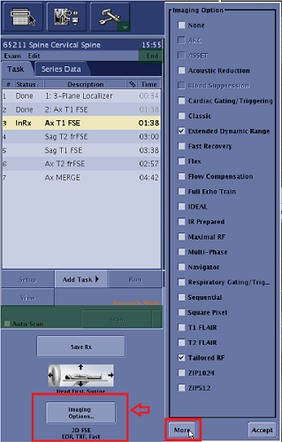
- Set item 2 to item 5.
- Set Mode, GradientEcho and GRE.
- Type B0rf in PSD Name then press Enter .
- Click Accept to save and quit this page.
Figure 3. Set item 2 to item 5 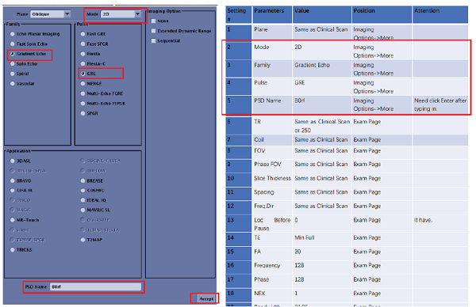
Note A warning window may pop up showing “GRx will be lost. Please prescribe GRx again.” Click Ok to close the windowFigure 4. Warning message 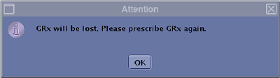
- Click Copy Rx Button in the Graphic Rx Toolbar and select the bad scanNote If a 3D bad protocol is copied, select All in ModeFilter tab
Figure 5. Click Copy Rx button and select the bad scan 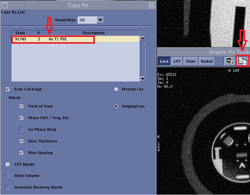
- Set item 6 and item 14 – 19. Note Item 6 could be the same as clinical scan or set as 250
Figure 6. Set item 6 and item 14 - 19 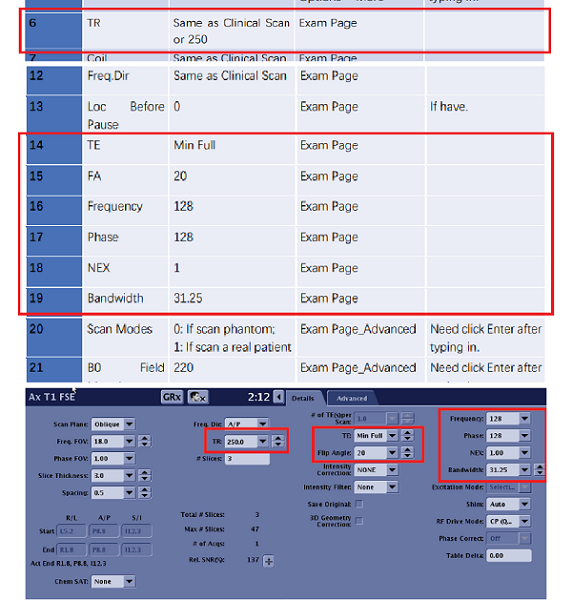
- Click Advanced tab and set item 20 and 21 then Press Enter.Note Pay attention to type in correct scan mode (0: scan phantom; 1: scan patient).
Figure 7. Set item 20 and 21 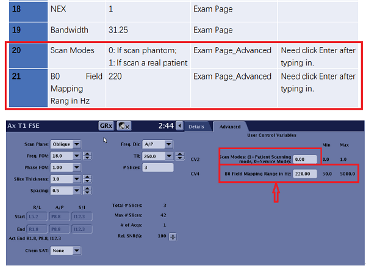
- Open Imaging Option Page by clicking Imaging Options button. Then click More button.
- Save settings by click Save Rx button.
Figure 8. Save settings 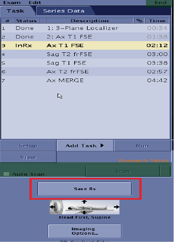
- Rename the copied protocol.Note It’s better to add a suffix “B0 Map” in the copied protocol name
Figure 9. Rename the copied protocol with a suffix “B0 Map” 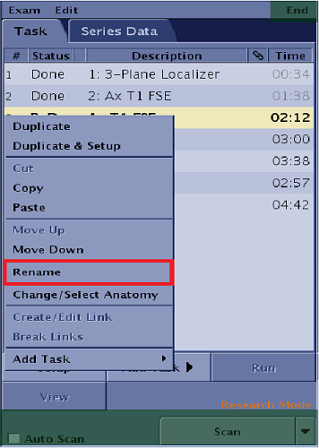
- On Scan button, click Manual Prescan to make sure the prescan parameters are the same as the bad scan.
Figure 10. Select Manual Prescan 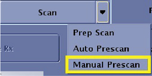
- Click Scan to start scan.
- Check the result.
Figure 11. Expected results 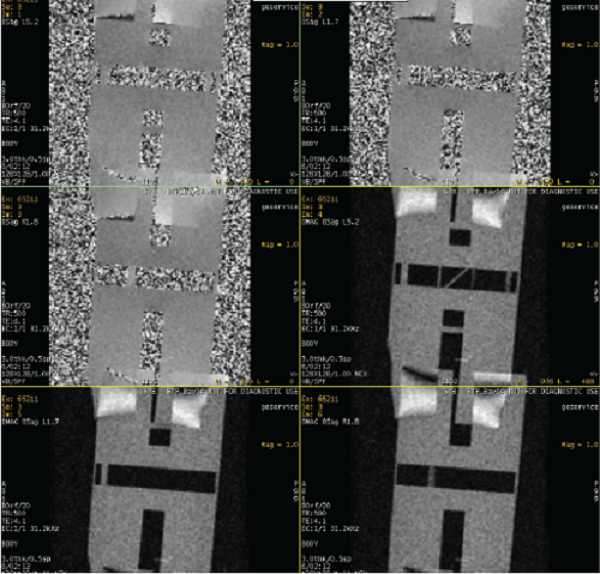
- Export the whole exam and send to engineer team if no other test needed.
Loading B1 map for software version earlier than MR30
Procedure
- Reproduce the bad scan. Keep the same scan parameters as the clinical scan. Parameters including protocols, scan settings, coils, patient position, localizer position and so on.
- Make a new scan by clicking Duplicate & Setup button.
Figure 12. Duplicate & Setup button - Follow 3.1 - 3.4 to set 19 items of copied protocol as values listed in Values to be set
Table 2. Values to be set Setting Parameter Value Position Attention 1 Plane Same as Clinical scan Imaging Options -> More 2 Mode 2D Imaging Options -> More 3 Family Gradient Echo Imaging Options -> More 4 Pulse GRE Imaging Options -> More 5 PSD Name B1MAP Imaging Options -> More Need click Enter after typing in. 6 TR Same as Clinical scan Exam Page 7 Coil GE T/R body coil + coil used in Clinical Scan Exam Page 8 FOV Same as Clinical scan Exam Page 9 Phase FOV Same as Clinical scan Exam Page 10 Slice Thickness Same as Clinical scan Exam Page Minimum is 5 11 Spacing Same as Clinical scan Exam Page 12 Freq.Dir Same as Clinical scan Exam Page 13 Loc Before Pause 0 Exam Page If have. 14 TE Same as Clinical scan Exam Page 15 FA 20 Exam Page 16 Frequency 128 Exam Page 17 Phase 128 Exam Page 18 NEX 1 Exam Page 19 Bandwidth 31.25 Exam Page - Open Imaging Option Page by clicking Imaging Options button. Then click More button.
Figure 13. Click Imaging Options & More - Set item 2 to item 5.
- Set Mode, Gradient Echo and GRE.
- Type B1MAP in PSD Name then press Enter .
- Click Accept to save and quit this page.
Figure 14. Set item 2 to item 5 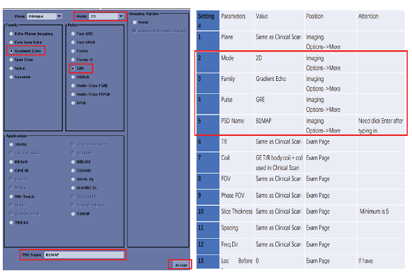
Note A warning window showing “GRx will be lost. Please prescribe GRx again.” may pop up. Click Ok to close the window.Figure 15. Warning message
- Click Copy Rx Button in the Graphic Rx Toolbar and select the bad scan.Note If a 3D bad protocol is copied, select All in ModeFilter tab.
Figure 16. Click Copy Rx button and select the bad scan - Set item 15 – 19.
Figure 17. Set item 15 - 19 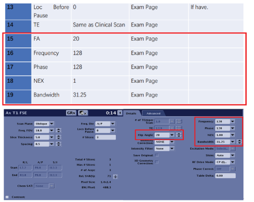
- Open Imaging Option Page by clicking Imaging Options button. Then click More button.
- Save settings by click Save Rx button.
Figure 18. Save settings - Rename the copied protocol.Note It’s better to add a suffix “B1 Map” in the copied protocol name.
Figure 19. Rename the copied protocol with a suffix “B1 Map” 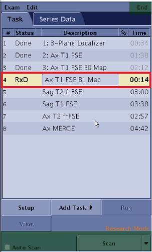
- On Scan button, click Manual Prescan to make sure the prescan parameters are the same as the bad scan.
Figure 20. Select Manual Prescan - Click Scan to start scan.
- Check the result.
Figure 21. Expected results 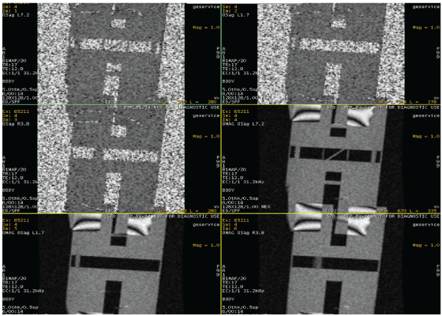
- Export the whole exam and send to engineer team if no other test needed.
Load B0 and B1 map for software version MR30 and later
Procedure
- Select the active scan session tab.
- From Scan/Task panel, click Add Task > Add Sequence.
Figure 22. Add Sequence screen 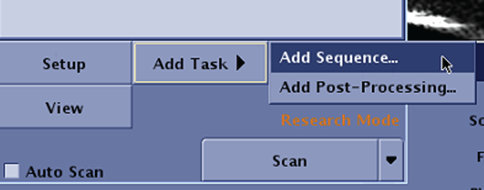
- From the Protocol screen, select Service protocol library.
- Click the protocol folder (B0map_RF_Test, b1map_tool).
- Click B0map_RF_Test,and then click the to send the protocol to the Multi Protocol Basket.
- Click B1 map,and then click the to send the protocol to the Multi Protocol Basket.
Figure 23. Loading B0,B1 map protocol 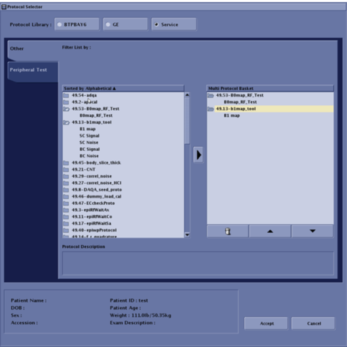
- Click Accept.
- Copy the graphic prescriptions from original series to B0/B1map series.
- Click the icon to open the Graphic Rx toolbar.
Figure 24. Example of a Graphic Rx toolbar 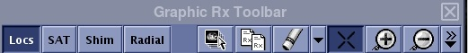
- From Graphic Rx toolbar, Click the icon to open the Copy Rx screen
Figure 25. Example of Copy Rx screen 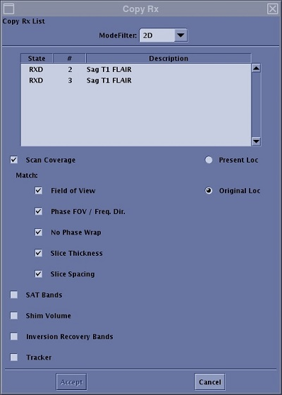
- Select Mode Filter, select All.
- Click the desired series (B0map_RF_Test or B1 map) from the Series List window.
- Click Original Loc.
- Click Accept.
- Regardless of the viewport active or the images displayed in the viewports, the system displays the original localizer in the original active viewport and posts the graphic lines.
- Click the icon to open the Graphic Rx toolbar.
- Edit the B0map_RF_Test scan parameters.
- Click the to show the details and advanced tab.
- On details tab, review and edit the parameter as below:
Table 3. B0map_RF_Test parameters on details tab Parameter Value Note Scan Plane Same as Clinical scan parameter setting - Freq.FOV Same as Clinical scan parameter setting - Phase FOV Same as Clinical scan parameter setting - Slice Thickness Same as Clinical scan parameter setting - Spacing Same as Clinical scan parameter setting - Freq. Dir Same as Clinical scan parameter setting - TR Same as Clinical scan parameter setting - TE Min Full - Loc Before Pause 0 If have setting the value to "0" Flip Angle 20 - Frequency 128 - Phase 128 - NEX 1.00 - Bandwidth 31.25 - Figure 26. Example of B0map_RF_Test parameters on details tab 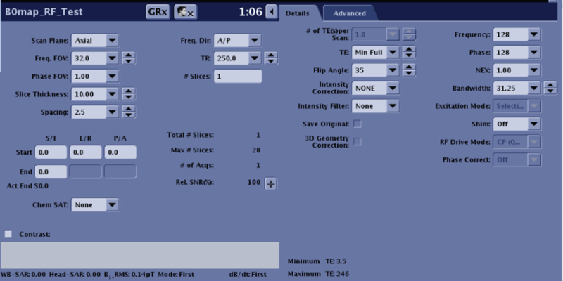
- On advanced tab, review and edit the parameter as below:
Table 4. B0map_RF_Test parameters on advanced tab Scan parameter Value Scan Modes (1= Patient Scanning mode, 0= Service Mode) 1 B0 Field Mapping Range in Hz 220 Figure 27. Example of B0map_RF_Test parameters on advanced tab 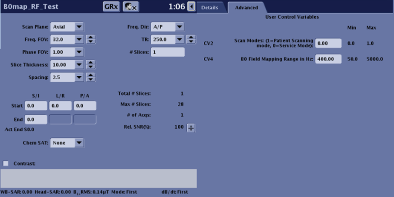
- On Scan button, select Manual Prescan from the scan menu. Make sure the parameters used are same with the protocol in the clinical scan.
Figure 28. Scan menu 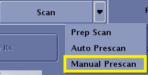
- Click Scan to begin the acquisition.
- Edit the B1 map scan parameters.
- Click the to show the details and advanced tab.
- On details tab, review and edit the parameter as below:
Table 5. B1 map parameters on details tab Parameter Value Note Scan Plane Same as Clinical scan parameter setting - Freq.FOV Same as Clinical scan parameter setting - Phase FOV Same as Clinical scan parameter setting - Slice Thickness Same as Clinical scan parameter setting - Spacing Same as Clinical scan parameter setting - Freq. Dir Same as Clinical scan parameter setting - TR Same as Clinical scan parameter setting - TE Same as Clinical scan parameter setting - Loc Before Pause 0 If have setting the value to "0" Flip Angle 20 - Frequency 128 - Phase 128 - NEX 1.00 - Bandwidth 31.25 - Figure 29. Example of B1 map parameters on details tab 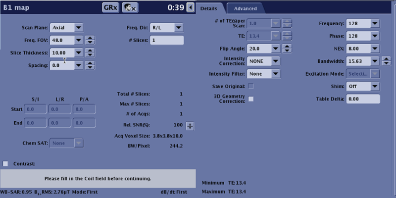
- On Scan button, select Manual Prescan from the scan menu. Make sure the parameters used are same with the protocol in the clinical scan.
Figure 30. Scan menu - Click Scan to begin the acquisition.